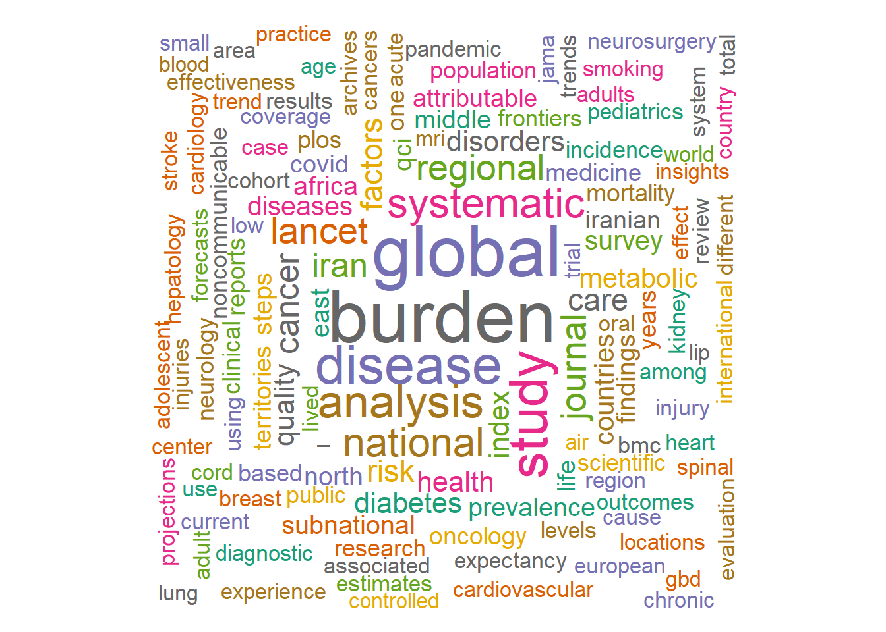

Publications
Indexed Peer Reviewed Publications
Selected Publications
- GBD 2021 US Obesity Forecasting Collaborators. National-level and state-level prevalence of overweight and obesity among children, adolescents, and adults in the USA, 1990-2021, and forecasts up to 2050. The Lancet. 2024. DOI: 10.1016/S0140-6736(24)01548-4
- GBD 2021 Appendicitis Collaborator Group. Trends and levels of the global, regional, and national burden of appendicitis between 1990 and 2021: findings from the Global Burden of Disease Study 2021. The Lancet Gastroenterology & Hepatology. 2024. DOI: 10.1016/S2468-1253(24)00157-2
- Azadnajafabad S, Ahmadi N, Rezaei N, Rashidi MM, Saeedi Moghaddam S, Mohammadi E, et al. Evaluation of the diabetes care cascade and compliance with WHO global coverage targets in Iran based on STEPS survey 2021. Scientific Reports. 2023. DOI: 10.1038/s41598-023-39433-7
- Azadnajafabad S, Saeedi Moghaddam S, Mohammadi E, Delazar S, Rashedi S, Baradaran HR, et al. Patterns of better breast cancer care in countries with higher human development index and healthcare expenditure: Insights from GLOBOCAN 2020. Frontiers in Public Health. 2023. DOI: 10.3389/fpubh.2023.1137286
- Djalalinia S, Azadnajafabad S, Ghasemi E, Yoosefi M, Rezaei N, Farzi Y, et al. Protocol Design for Surveillance of Risk Factors of Non–communicable Diseases During the COVID-19 Pandemic: An Experience from Iran STEPS Survey 2021. Archives of Iranian Medicine. 2022. DOI: 10.34172/aim.2022.99
- Azadnajafabad S, Saeedi Moghaddam S, Keykhaei M, Shobeiri P, Rezaei N, Ghasemi E, et al. Expansion of the quality of care index on breast cancer and its risk factors using the Global Burden of Disease Study 2019. Cancer Medicine. 2022. DOI: 10.1002/cam4.4951
- Farzadfar F, Naghavi M, Sepanlou SG, Saeedi Moghaddam S, Dangel WJ, Davis Weaver N, Aminorroaya A, Azadnajafabad S, Koolaji S, Mohammadi E, et al. Health system performance in Iran: a systematic analysis for the Global Burden of Disease Study 2019. The Lancet. 2022. DOI: 10.1016/S0140-6736(21)02751-3
- Global Burden of Disease 2019 Cancer Collaboration. Cancer Incidence, Mortality, Years of Life Lost, Years Lived With Disability, and Disability-Adjusted Life Years for 29 Cancer Groups From 2010 to 2019: A Systematic Analysis for the Global Burden of Disease Study 2019. JAMA Oncology. 2022. DOI: 10.1001/jamaoncol.2021.6987
- Azadnajafabad S, Saeedi Moghaddam S, Mohammadi E, Rezaei N, Ghasemi E, Fattahi N, et al. Global, regional, and national burden and quality of care index (QCI) of thyroid cancer: A systematic analysis of the Global Burden of Disease Study 1990-2017. Cancer Medicine. 2021. DOI: 10.1002/cam4.3823
- Sudharsanan N, Theilmann M, Kirschbaum TK, Manne-Goehler J, Azadnajafabad S, Bovet P, et al. Variation in the Proportion of Adults in Need of BP-Lowering Medications by Hypertension Care Guideline in Low- and Middle-Income Countries: A Cross-Sectional Study of 1,037,215 Individuals from 50 Nationally Representative Surveys. Circulation. 2021. DOI: 10.1161/CIRCULATIONAHA.120.051620
Publications Wordcloud
Bibliography
2024
- Ayati Firoozabadi M, Mafi AH, Afzal S, Beheshti Fard S, Khaledian H, Bozorgsavoji A, Azadnajafabad S, Mortazavi SMJ. Does body mass index (BMI) significantly influence aseptic loosening in primary total knee arthroplasty? Insights from a long-term retrospective cohort study. BMC Musculoskeletal Disorders. 2024. DOI: 10.1186/s12891-024-07913-0
- GBD 2021 HIV Collaborators. Global, regional, and national burden of HIV/AIDS, 1990-2021, and forecasts to 2050, for 204 countries and territories: the Global Burden of Disease Study 2021. The Lancet HIV. 2024. DOI: 10.1016/S2352-3018(24)00212-1
- GBD 2021 US Obesity Forecasting Collaborators. National-level and state-level prevalence of overweight and obesity among children, adolescents, and adults in the USA, 1990-2021, and forecasts up to 2050. The Lancet. 2024. DOI: 10.1016/S0140-6736(24)01548-4
- Arian A, Karimi N, Ahmadinejad N, Azadnajafabad S, Delazar S. Refining MRI Protocols for Endometriosis: A Comparative Study of Abbreviated and Full MRI Sequences. British Journal of Radiology. 2024. DOI: 10.1093/bjr/tqae230
- GBD 2021 Global Stillbirths Collaborators. Global, regional, and national stillbirths at 20 weeks’ gestation or longer in 204 countries and territories, 1990-2021: findings from the Global Burden of Disease Study 2021. The Lancet. 2024. DOI: 10.1016/S0140-6736(24)01925-1
- Lamsehchi A, Shokouhi Solgi M, Sabzehei MK, Basiri B, Talebi Ghane E, Kimiayi Asadi K, Azadnajafabad S. Short-term outcomes of oropharyngeal administration of colostrum in preterm neonates: a double-blind placebo-controlled randomized trial. Clinical and Experimental Pediatrics. 2024. DOI: 10.3345/cep.2024.00591
- Amouzadeh Omrani F, Afzal S, Baroutkoub M, Barati H, Azadnajafabad S, Keipour A. Distant migration of a broken guide pin following femoral neck fixation: a case report. Journal of Medical Case Reports. 2024. DOI: 10.1186/s13256-024-04868-7
- Malekpour M-R, Rezaei N, Azadnajafabad S, Khanali J, Azangou-Khyavy M, Saeedi Moghaddam S, et al. Global, regional, and national burden of injuries, and burden attributable to injuries risk factors, 1990 to 2019: results from the Global Burden of Disease study 2019. Public Health. 2024. DOI: 10.1016/j.puhe.2024.06.011
- GBD 2021 Tobacco Forecasting Collaborators. Forecasting the effects of smoking prevalence scenarios on years of life lost and life expectancy from 2022 to 2050: a systematic analysis for the Global Burden of Disease Study 2021. The Lancet Public Health. 2024. DOI: 10.1016/S2468-2667(24)00166-X
- GBD 2021 Stroke Risk Factor Collaborators. Global, regional, and national burden of stroke and its risk factors, 1990-2021: a systematic analysis for the Global Burden of Disease Study 2021. The Lancet Neurology. 2024. DOI: 10.1016/S1474-4422(24)00369-7
- GBD 2021 Antimicrobial Resistance Collaborators. Global burden of bacterial antimicrobial resistance 1990-2021: a systematic analysis with forecasts to 2050. The Lancet. 2024. DOI: 10.1016/S0140-6736(24)01867-1
- GBD 2021 Upper Respiratory Infections Otitis Media Collaborators. Global, regional, and national burden of upper respiratory infections and otitis media, 1990-2021: a systematic analysis from the Global Burden of Disease Study 2021. The Lancet Infectious Diseases. 2024. DOI: 10.1016/S1473-3099(24)00430-4
- Soleimani H, Tavakoli K, Nasrollahizadeh A, Azadnajafabad S, Mashayekhi M, Ebrahimi P, et al. Estimating the burden of atrial fibrillation and atrial flutter with projection to 2050 in Iran. Scientific Reports. 2024. DOI: 10.1038/s41598-024-71296-4
- Hajebi A, Nasserinejad M, Rezaei N, Azadnajafabad S, Rashidi MM, Ahmadi N, et al. Alcohol consumption among Iranian population based on the findings of STEPS survey 2021. Scientific Reports. 2024. DOI: 10.1038/s41598-024-66257-w
- GBD 2021 Appendicitis Collaborator Group. Trends and levels of the global, regional, and national burden of appendicitis between 1990 and 2021: findings from the Global Burden of Disease Study 2021. The Lancet Gastroenterology & Hepatology. 2024. DOI: 10.1016/S2468-1253(24)00157-2
- GBD 2019 MSK in Adolescents Collaborators. Global pattern, trend, and cross-country inequality of early musculoskeletal disorders from 1990 to 2019, with projection from 2020 to 2050. Med. 2024. DOI: 10.1016/j.medj.2024.04.009
- GBD 2021 Forecasting Collaborators. Burden of disease scenarios for 204 countries and territories, 2022-2050: a forecasting analysis for the Global Burden of Disease Study 2021. The Lancet. 2024. DOI: 10.1016/S0140-6736(24)00685-8
- GBD 2021 Risk Factors Collaborators. Global burden and strength of evidence for 88 risk factors in 204 countries and 811 subnational locations, 1990-2021: a systematic analysis for the Global Burden of Disease Study 2021. The Lancet. 2024. DOI: 10.1016/S0140-6736(24)00933-4
- GBD 2021 Diseases and Injuries Collaborators. Global incidence, prevalence, years lived with disability (YLDs), disability-adjusted life-years (DALYs), and healthy life expectancy (HALE) for 371 diseases and injuries in 204 countries and territories and 811 subnational locations, 1990-2021: a systematic analysis for the Global Burden of Disease Study 2021. The Lancet. 2024. DOI: 10.1016/S0140-6736(24)00757-8
- GBD 2019 North Africa and the Middle East Neurology Collaborators. The burden of neurological conditions in north Africa and the Middle East, 1990-2019: a systematic analysis of the Global Burden of Disease Study 2019. The Lancet Global Health. 2024. DOI: 10.1016/S2214-109X(24)00093-7
- GBD 2021 Causes of Death Collaborators. Global burden of 288 causes of death and life expectancy decomposition in 204 countries and territories and 811 subnational locations, 1990-2021: a systematic analysis for the Global Burden of Disease Study 2021. The Lancet. 2024. DOI: 10.1016/S0140-6736(24)00367-2
- GBD 2021 Fertility and Forecasting Collaborators. Global fertility in 204 countries and territories, 1950-2021, with forecasts to 2100: a comprehensive demographic analysis for the Global Burden of Disease Study 2021. The Lancet. 2024. DOI: 10.1016/S0140-6736(24)00550-6
- GBD 2021 Tuberculosis Collaborators. Global, regional, and national age-specific progress towards the 2020 milestones of the WHO End TB Strategy: a systematic analysis for the Global Burden of Disease Study 2021. The Lancet Infectious Diseases. 2024. DOI: 10.1016/S1473-3099(24)00007-0
- GBD 2021 Nervous System Disorders Collaborators. Global, regional, and national burden of disorders affecting the nervous system, 1990-2021: a systematic analysis for the Global Burden of Disease Study 2021. The Lancet Neurology. 2024. DOI: 10.1016/S1474-4422(24)00038-3
- GBD 2021 Demographics Collaborators. Global age-sex-specific mortality, life expectancy, and population estimates in 204 countries and territories and 811 subnational locations, 1950-2021, and the impact of the COVID-19 pandemic: a comprehensive demographic analysis for the Global Burden of Disease Study 2021. The Lancet. 2024. DOI: 10.1016/S0140-6736(24)00476-8
- GBD 2021 Neck Pain Collaborators. Global, regional, and national burden of neck pain, 1990-2020, and projections to 2050: a systematic analysis of the Global Burden of Disease Study 2021. The Lancet Rheumatology. 2024. DOI: 10.1016/S2665-9913(23)00321-1
- Ilkhani S, Saeedi Moghaddam S, Sakhaei D, Rashidi M-M, Azadnajafabad S, Azangou-Khyavy M, et al. Global, regional, and national survey on burden and quality of care index (QCI) of nasopharyngeal cancer: A systematic analysis of the Global Burden of disease study 1990–2019. Oral Oncology Reports. 2024. DOI: 10.1016/j.oor.2024.100198
- Yazdi NA, Parviz S, Delazar S, Azadnajafabad S, Aleseidi S, Saffar H, Sadighi N. A case report on pulmonary metastasis of giant cell tumor mimicking arteriovenous malformation. Radiology Case Reports. 2024. DOI: 10.1016/j.radcr.2023.11.075
- Khadembashiri MM, Ghasemi E, Khadembashiri MA, Azadnajafabad S, Moghaddam SS, Eslami M, et al. The global, regional, and national burden and quality of care index (QCI) of kidney cancer; a Global Burden of Disease systematic analysis 1990-2019. International Journal for Quality in Health Care. 2024. DOI: 10.1093/intqhc/mzad113
- Rashidi MM, Saeedi Moghaddam S, Azadnajafabad S, Mohammadi E, Khalaji A, Malekpour MR, et al. Mortality and disability-adjusted life years in North Africa and Middle East attributed to kidney dysfunction: a systematic analysis for the Global Burden of Disease Study 2019. Clinical Kidney Journal. 2024. DOI: 10.1093/ckj/sfad279
- Shoaee S, Ghasemi E, Sofi-Mahmudi A, Shamsoddin E, Tovani-Palone MR, Roshani S, Heydari MH, Yoosefi M, Masinaei M, Azadnajafabad S, Mohammadi E, et al. Global, regional, and national burden and quality of care index (QCI) of oral disorders: a systematic analysis of the global burden of disease study 1990-2017. BMC Oral Health. 2024. DOI: 10.1186/s12903-023-03808-z
- GBD 2019 Asia and All Cancers Collaborators. Temporal patterns of cancer burden in Asia, 1990–2019: a systematic examination for the Global Burden of Disease 2019 study. The Lancet Regional Health - Southeast Asia. 2024. DOI: 10.1016/j.lansea.2023.100333
2023
- Salehi MR, Ghaemi M, Masoumi S, Azadnajafabad S, Norooznezhad AH, Ghotbizadeh Vahdani F, et al. Comparative Analysis of Corticosteroid Therapy in Pregnant Women with COVID-19: Evaluating Glycemic Control and Transient Hyperglycemia. Fertility, Gynecology and Andrology. 2023. DOI: 10.5812/fga-142142
- Shahmohamadi E, Yousefi M, Mohammadi E, Ghanbari A, Shaker E, Azadnajafabad S, et al. National and Provincial Prevalence of Cigarette Smoking in Iran; A Systematic Analysis of 12 Years of STEPS Experience. Archives of Iranian Medicine. 2023. DOI: 10.34172/aim.2023.72
- Langroudi AP, Farzi Y, Masinaei M, Varniab ZS, Shahin S, Rashidi M-M, Moghaddam SS, Rahimi S, Khalili M, Keykhaei M, Ahmadi N, Kazemi A, Ghasemi E, Azadnajafabad S, Yoosefi M, et al. Exploring metabolically healthy obesity: prevalence, characteristics, and cardiovascular risk in the Iranian population based on the STEPS 2021. Journal of Diabetes & Metabolic Disorders. 2023. DOI: 10.1007/s40200-023-01364-5
- Shokri Varniab Z, Saeedi Moghaddam S, Pourabhari Langroudi A, Azadnajafabad S, Mortazavi SS, Sheidaei A, et al. The levels and trends of cancer incidence in the elderly population at national and sub-national scales in Iran from 1990 to 2016. Cancer Reports. 2023. DOI: 10.1002/cnr2.1937
- GBD 2019 North Africa and the Middle East Drug-Use Disorders Collaborators. Drug-use disorders in the Eastern Mediterranean Region: a glance at GBD 2019 findings. Social Psychiatry and Psychiatric Epidemiology. 2023. DOI: 10.1007/s00127-023-02587-w
- Shahmohamadi E, Ghasemi E, Mohammadi E, Nasserinejad M, Azadnajafabad S, Malekpour MR, et al. Current incidence of injuries in Iran; findings of STEPS survey 2021. Heliyon. 2023. DOI: 10.1016/j.heliyon.2023.e20907
- GBD Spinal Cord Injuries Collaborators. Global, regional, and national burden of spinal cord injury, 1990-2019: a systematic analysis for the Global Burden of Disease Study 2019. The Lancet Neurology. 2023. DOI: 10.1016/S1474-4422(23)00287-9
- Iezadi S, Ebrahimi N, Ghamari SH, Esfahani Z, Rezaei N, Ghasemi E, Saeedi Moghaddam S, Azadnajafabad S, Abdi Z, et al. Global and regional quality of care index (QCI) by gender and age in oesophageal cancer: A systematic analysis of the Global Burden of Disease Study 1990-2019. PLOS One. 2023. DOI: 10.1371/journal.pone.0292348
- GBD 2021 Rheumatoid Arthritis Collaborators. Global, regional, and national burden of rheumatoid arthritis, 1990-2020, and projections to 2050: a systematic analysis of the Global Burden of Disease Study 2021. The Lancet Rheumatology. 2023. DOI: 10.1016/S2665-9913(23)00211-4
- Khanali J, Ghasemi E, Rashidi MM, Ahmadi N, Ghamari SH, Azangou-Khyavy M, Malekpour MR, Abbasi-Kangevari M, Hashemi SM, Naderian M, Rezaei N, Dilmaghani-Marand A, Farzi Y, Kazemi A, Yoosefi M, Hajebi A, Rezaei S, Azadnajafabad S, Fattahi N, et al. Prevalence of plasma lipid abnormalities and associated risk factors among Iranian adults based on the findings from STEPs survey 2021. Scientific Reports. 2023. DOI: 10.1038/s41598-023-42341-5
- Maroufi SF, Shobeiri P, Mohammadi E, Azadnajafabad S, Malekpour MR, Ghasemi E, et al. A Global, Regional, and National Survey on Burden and Quality of Care Index (QCI) of Multiple Sclerosis; Global Burden of Disease Systematic Analysis 1990-2019. Neuroepidemiology. 2023. DOI: 10.1159/000533527
- Maroufi SF, Azadnajafabad S, Kheiri G, Jazayeri SB, Ghodsi Z, Ghawami H, et al. Adopting and Adapting Clinical Practice Guidelines for the Use of Baseline MRI in Acute Spinal Cord Injury in a Developing Country. Archives of Neuroscience. 2023. DOI: 10.5812/ans-135297
- Azadnajafabad S, Ahmadi N, Rezaei N, Rashidi MM, Saeedi Moghaddam S, Mohammadi E, et al. Evaluation of the diabetes care cascade and compliance with WHO global coverage targets in Iran based on STEPS survey 2021. Scientific Reports. 2023. DOI: 10.1038/s41598-023-39433-7
- GBD 2019 Lip, Oral, and Pharyngeal Cancer Collaborators. The Global, Regional, and National Burden of Adult Lip, Oral, and Pharyngeal Cancer in 204 Countries and Territories: A Systematic Analysis for the Global Burden of Disease Study 2019. JAMA Oncology. 2023. DOI: 10.1001/jamaoncol.2023.2960
- Soleimani Z, Mosadeghrad AM, Alighardashi M, Azadnajafabad S, Safari M, Mokhtari Z, et al. Knowledge, attitude, and practice of nurse aids and service staff about nosocomial infection control: A case study in Iran. Environmental Health Engineering and Management Journal. 2023. DOI: 10.34172/EHEM.2023.38
- Rashidi MM, Saeedi Moghaddam S, Azadnajafabad S, Heidari-Foroozan M, Haddadi M, Tehrani YS, et al. Burden and quality of care index of chronic kidney disease: Global Burden of Disease analysis for 1990-2019. Nephrology Dialysis Transplantation. 2023. DOI: 10.1093/ndt/gfad172
- GBD 2019 IMID Collaborators. Global, regional, and national incidence of six major immune-mediated inflammatory diseases: findings from the global burden of disease study 2019. eClinicalMedicine. 2023. DOI: 10.1016/j.eclinm.2023.102193
- Azadnajafabad S, Saeedi Moghaddam S, Mohammadi E, Rezaei N, Rashidi M-M, Rezaei N, et al. Burden of breast cancer and attributable risk factors in the North Africa and Middle East region, 1990–2019: a systematic analysis for the Global Burden of Disease Study 2019. Frontiers in Oncology. 2023. DOI: 10.3389/fonc.2023.1132816
- GBD 2021 Anaemia Collaborators. Prevalence, years lived with disability, and trends in anaemia burden by severity and cause, 1990-2021: findings from the Global Burden of Disease Study 2021. The Lancet Haematology. 2023. DOI: 10.1016/S2352-3026(23)00160-6
- GBD 2019 Meningitis Antimicrobial Resistance Collaborators. Global, regional, and national burden of meningitis and its aetiologies, 1990-2019: a systematic analysis for the Global Burden of Disease Study 2019. The Lancet Neurology. 2023. DOI: 10.1016/S1474-4422(23)00195-3
- GBD 2019 Allergic Disorders Collaborators. Global, regional, and national burden of allergic disorders and their risk factors in 204 countries and territories, from 1990 to 2019: A systematic analysis for the Global Burden of Disease Study 2019. Allergy. 2023. DOI: 10.1111/all.15807
- Abbasi-Kangevari M, Ghanbari A, Malekpour MR, Ghamari SH, Azadnajafabad S, Saeedi Moghaddam S, et al. Exploring the clinical benefit of ventilation therapy across various patient groups with COVID-19 using real-world data. Scientific Reports. 2023. DOI: 10.1038/s41598-023-37912-5
- Fattahi N, Ghanbari A, Djalalinia S, Rezaei N, Mohammadi E, Azadnajafabad S, et al. Global, Regional, and National Quality of Care Index (QCI) of Gastric Cancer: A Systematic Analysis for the Global Burden of Disease Study 1990-2017. Journal of Gastrointestinal Cancer. 2023. DOI: 10.1007/s12029-023-00950-3
- GBD 2021 Diabetes Collaborators. Global, regional, and national burden of diabetes from 1990 to 2021, with projections of prevalence to 2050: a systematic analysis for the Global Burden of Disease Study 2021. The Lancet. 2023. DOI: 10.1016/S0140-6736(23)01301-6
- GBD 2019 Iran Breast Cancer Collaborators. National and subnational burden of female and male breast cancer and risk factors in Iran from 1990 to 2019: results from the Global Burden of Disease study 2019. Breast Cancer Research. 2023. DOI: 10.1186/s13058-023-01633-4
- Tayebi H, Azadnajafabad S, Maroufi SF, Pour-Rashidi A, Khorasanizadeh M, Faramarzi S, et al. Applications of brain-computer interfaces in neurodegenerative diseases. Neurosurgical Review. 2023. DOI: 10.1007/s10143-023-02038-9
- GBD 2019 North Africa and the Middle East MRF Collaborators. The burden of metabolic risk factors in North Africa and the Middle East, 1990-2019: findings from the Global Burden of Disease Study. eClinicalMedicine. 2023. DOI: 10.1016/j.eclinm.2023.102022
- Moradi S, Parsaei A, Saeedi Moghaddam S, Aryannejad A, Azadnajafabad S, Rezaei N, et al. Metabolic risk factors attributed burden in Iran at national and subnational levels, 1990 to 2019. Frontiers in Public Health. 2023. DOI: 10.3389/fpubh.2023.1149719
- GBD 2021 Low Back Pain Collaborators. Global, regional, and national burden of low back pain, 1990-2020, its attributable risk factors, and projections to 2050: a systematic analysis of the Global Burden of Disease Study 2021. The Lancet Rheumatology. 2023. DOI: 10.1016/S2665-9913(23)00098-X
- Mohammadi E, Yoosefi M, Shaker E, Shahmohamadi E, Ghasemi E, Ahmadi N, Azadnajafabad S, et al. Inequalities in prevalence of hypertension, prehypertension, anti-hypertensive coverage, awareness, and effective treatment in 429 districts of Iran; a population-based STEPS 2016 small area spatial estimation model. Journal of Diabetes & Metabolic Disorders. 2023. DOI: 10.1007/s40200-023-01186-5
- Rashidi MM, Saeedi Moghaddam S, Azadnajafabad S, Heidari-Foroozan M, Hashemi SM, Mohammadi E, et al. Low bone mineral density, a neglected condition in North Africa and Middle East: estimates from the Global Burden of Disease Study, 1990-2019. Osteoporosis International. 2023. DOI: 10.1007/s00198-023-06778-8
- Hajebi A, Nasserinejad M, Azadnajafabad S, Ghasemi E, Rezaei N, Yoosefi M, et al. Physical Inactivity, Inequalities, and Disparities Across Districts of Iran: A STEPs Survey-Based Analysis. Journal of Physical Activity and Health. 2023. DOI: 10.1123/jpah.2022-0113
- GBD 2019 North Africa and the Middle East Air Pollution Collaborators. Effect of air pollution on disease burden, mortality, and life expectancy in North Africa and the Middle East: a systematic analysis for the Global Burden of Disease Study 2019. The Lancet Planetary Health. 2023. DOI: 10.1016/S2542-5196(23)00053-0
- GBD 2019 Chronic Respiratory Diseases Collaborators. Global burden of chronic respiratory diseases and risk factors, 1990–2019: an update from the Global Burden of Disease Study 2019. eClinicalMedicine. 2023. DOI: 10.1016/j.eclinm.2023.101936
- Azadnajafabad S, Saeedi Moghaddam S, Mohammadi E, Delazar S, Rashedi S, Baradaran HR, et al. Patterns of better breast cancer care in countries with higher human development index and healthcare expenditure: Insights from GLOBOCAN 2020. Frontiers in Public Health. 2023. DOI: 10.3389/fpubh.2023.1137286
- GBD Fatty Liver Disease-SDG Collaborators. The global Fatty Liver Disease-Sustainable Development Goal country score for 195 countries and territories. Hepatology. 2023. DOI: 10.1097/HEP.0000000000000361
- Maroufi SF, Azadnajafabad S, Pour-Rashidi A, Jazayeri SB, Ghodsi Z, Ghawami H, et al. Adopting and adapting clinical practice guidelines for timing of decompressive surgery in acute spinal cord injury from a developed world context to a developing region. Acta Neurochirurgica. 2023. DOI: 10.1007/s00701-023-05591-w
- Koolaji S, Sharifnejad Tehrani Y, Azadnajafabad S, Saeedi Moghaddam S, Shahin S, Ghamari A, et al. A 30-year trend of ischemic heart disease burden in a developing country; a systematic analysis of the global burden of disease study 2019 in Iran. International Journal of Cardiology. 2023. DOI: 10.1016/j.ijcard.2023.03.012
- GBD 2019 Iran Kidney Dysfunction Collaborators. Trends of national and sub-national burden attributed to kidney dysfunction risk factor in Iran: 1990-2019. Frontiers in Endocrinology. 2023. DOI: 10.3389/fendo.2023.1115833
- Karimi A, Saeedi Moghaddam S, Azadnajafabad S, Esfahani Z, Sharifnejad Tehrani Y, Abbasi-Kangevari M, et al. The burden of childhood and adolescent cancers in North Africa and the Middle East (NAME) region: findings from the Global Burden of Disease study 2019. BMC Pediatrics. 2023. DOI: 10.1186/s12887-023-03931-4
- Fallahi MS, Azadnajafabad S, Maroufi SF, Pour-Rashidi A, Khorasanizadeh M, Sattari SA, et al. Application of Vagus Nerve Stimulation in Spinal Cord Injury Rehabilitation. World Neurosurgery. 2023. DOI: 10.1016/j.wneu.2023.02.101
- Keykhaei M, Rezaei N, Roshani S, Montazeri F, Nasserinejad M, Azadnajafabad S, et al. Population attributable fraction estimates of cardiovascular diseases in different blood pressure levels in a large-scale cross-sectional study: a focus on prevention strategies and treatment coverage. Blood Pressure Monitoring. 2023. DOI: 10.1097/MBP.0000000000000612
2022
- GBD 2019 Elderly Injuries Collaborators. Injury burden in individuals aged 50 years or older in the Eastern Mediterranean region, 1990-2019: a systematic analysis from the Global Burden of Disease Study 2019. The Lancet Healthy Longevity. 2022. DOI: 10.1016/S2666-7568(22)00038-1
- Khanmohammadi S, Saeedi Moghaddam S, Azadnajafabad S, Rezaei N, Esfahani Z, Rezaei N, et al. Burden of tracheal, bronchus, and lung cancer in North Africa and Middle East countries, 1990 to 2019: Results from the GBD study 2019. Frontiers in Oncology. 2022. DOI: 10.3389/fonc.2022.1098218
- Mohammadi E, Saeedi Moghaddam S, Azadnajafabad S, Maroufi SF, Rashidi MM, Naderian M, et al. Epidemiology of Brain and Other Central Nervous System Cancers in the North Africa and Middle East Region: a Systematic Analysis of the Global Burden of Disease Study 1990-2019. World Neurosurgery. 2022. DOI: 10.1016/j.wneu.2022.12.112
- Djalalinia S, Azadnajafabad S, Ghasemi E, Yoosefi M, Rezaei N, Farzi Y, et al. Protocol Design for Surveillance of Risk Factors of Non–communicable Diseases During the COVID-19 Pandemic: An Experience from Iran STEPS Survey 2021. Archives of Iranian Medicine. 2022. DOI: 10.34172/aim.2022.99
- GBD 2019 Antimicrobial Resistance Collaborators. Global mortality associated with 33 bacterial pathogens in 2019: a systematic analysis for the Global Burden of Disease Study 2019. The Lancet. 2022. DOI: 10.1016/S0140-6736(22)02185-7
- Keramati MR, Delazar S, Tabari MR, Araghi F, Azadnajafabad S, Kazemeini A, et al. Prognostic Factors of Disease Recurrence and Overall Survival Following Curative Resection of Colon Cancer: A 10-year Cohort from a Referral Center. Medical Journal of the Islamic Republic of Iran. 2022. DOI: 10.47176/mjiri.36.139
- GBD 2019 Iran Maternal Collaborators. Maternal Mortality and Morbidity by Cause in Provinces of Iran, 1990 to 2019: An Analysis for the Global Burden of Disease Study 2019. Archives of Iranian Medicine. 2022. DOI: 10.34172/aim.2022.93
- GBD 2019 Iran Child Collaborators. Neonate, Infant, and Child Mortality by Cause in Provinces of Iran: An Analysis for the Global Burden of Disease Study 2019. Archives of Iranian Medicine. 2022. DOI: 10.34172/aim.2022.80
- Djalalinia S, Azadnajafabad S, Rezaei N, Malekpour M-R, Ghasemi E, Yoosefi M, et al. The first nationally and sub-nationally representative non-communicable diseases cohort study in Iran: Iran Cohort Study (ICS) protocol. Journal of Diabetes & Metabolic Disorders. 2022. DOI: 10.1007/s40200-022-01143-8
- Gorgani F, Esfahani Z, Ghamari SH, Ghasemi E, Azadnajafabad S, Shobeiri P, et al. Global, Regional, and National Burden and Quality of Care Index of Liver Cirrhosis by Cause from Global Burden of Disease 1990-2019. Journal of Gastroenterology and Hepatology. 2022. DOI: 10.1111/jgh.16041
- Karimi A, Shobeiri P, Azadnajafabad S, Masinaei M, Rezaei N, Ghanbari A, et al. A global, regional, and national survey on burden and Quality of Care Index (QCI) of bladder cancer: The global burden of disease study 1990-2019. PLOS One. 2022. DOI: 10.1371/journal.pone.0275574
- Balali P, Nasserinejad M, Azadnajafabad S, Ahmadi N, Delavari F, Rashidian L, et al. Is elevated ALT associated with lifestyle risk factors? A population-based survey. Journal of Diabetes & Metabolic Disorders. 2022. DOI: 10.1007/s40200-022-01137-6
- Tavolinejad H, Roshani S, Rezaei N, Ghasemi E, Yoosefi M, Rezaei N, Ghamari A, Shahin S, Azadnajafabad S, et al. A machine learning approach to evaluate the state of hypertension care coverage: From 2016 STEPs survey in Iran. PLOS One. 2022. DOI: 10.1371/journal.pone.0273560
- Nejadghaderi SA, Saeedi Moghaddam S, Azadnajafabad S, Rezaei N, Rezaei N, Tavangar SM, et al. Burden of thyroid cancer in North Africa and Middle East 1990–2019. Frontiers in Oncology. 2022. DOI: 10.3389/fonc.2022.955358
- GBD 2019 NAME Prostate Cancer Collaborators. The burden of prostate cancer in North Africa and Middle East, 1990–2019: Findings from the global burden of disease study. Frontiers in Oncology. 2022. DOI: 10.3389/fonc.2022.961086
- Heidari-Foroozan M, Saeedi Moghaddam S, Keykhaei M, Shobeiri P, Azadnajafabad S, Esfahani Z, et al. Regional and national burden of leukemia and its attributable burden to risk factors in 21 countries and territories of North Africa and Middle East, 1990-2019: results from the GBD study 2019. Journal of Cancer Research and Clinical Oncology. 2022. DOI: 10.1007/s00432-022-04293-7
- Rashedi S, Mardani M, Rafati A, Khavandi MM, Mohammadi F, Javanshir S, Sarallah R, Dolatshahi M, Sabahi M, Azadnajafabad S, et al. Circular RNAs as prognostic and diagnostic biomarkers in renal cell carcinoma. Journal of Clinical Laboratory Analysis. 2022. DOI: 10.1002/jcla.24670
- Malekpour MR, Azadnajafabad S, Rezazadeh-Khadem S, Bhalla K, Ghasemi E, Heydari ST, et al. The effectiveness of fixed speed cameras on Iranian taxi drivers: An evaluation of the influential factors. Frontiers in Public Health. 2022. DOI: 10.3389/fpubh.2022.964214
- GBD 2019 Cancer Risk Factors Collaborators. The global burden of cancer attributable to risk factors, 2010-19: a systematic analysis for the Global Burden of Disease Study 2019. The Lancet. 2022. DOI: 10.1016/S0140-6736(22)01438-6
- GBD 2019 LRI Collaborators. Age-sex differences in the global burden of lower respiratory infections and risk factors, 1990-2019: results from the Global Burden of Disease Study 2019. The Lancet Infectious Diseases. 2022. DOI: 10.1016/S1473-3099(22)00510-2
- Azangou-Khyavy M, Saeedi Moghaddam S, Rezaei N, Esfahani Z, Rezaei N, Azadnajafabad S, et al. National, sub-national, and risk-attributed burden of thyroid cancer in Iran from 1990 to 2019. Scientific Reports. 2022. DOI: 10.1038/s41598-022-17115-0
- Abbasi-Kangevari M, Ahmadi N, Fattahi N, Rezaei N, Malekpour MR, Ghamari SH, Moghaddam SS, Azadnajafabad S, et al. Quality of care of peptic ulcer disease worldwide: A systematic analysis for the global burden of disease study 1990-2019. PLOS One. 2022. DOI: 10.1371/journal.pone.0271284
- Shahbandi A, Shobeiri P, Azadnajafabad S, Saeedi Moghaddam S, Sharifnejad Tehrani Y, Ebrahimi N, et al. Burden of stroke in North Africa and Middle East, 1990 to 2019: a systematic analysis for the global burden of disease study 2019. BMC Neurology. 2022. DOI: 10.1186/s12883-022-02793-0
- Ghamari A, Rezaei N, Malekpour MR, Azadnajafabad S, Jafari A, Ahmadi N, et al. The effect of non-punitive peer comparison and performance feedback on drivers’ behavior using the telematics: The first randomized trial in Iran. Journal of Safety Research. 2022. DOI: 10.1016/j.jsr.2022.07.010
- GBD 2020 Alcohol Collaborators. Population-level risks of alcohol consumption by amount, geography, age, sex, and year: a systematic analysis for the Global Burden of Disease Study 2020. The Lancet. 2022. DOI: 10.1016/S0140-6736(22)00847-9
- GBD 2019 Adolescent Transport and Unintentional Injuries Collaborators. Adolescent transport and unintentional injuries: a systematic analysis using the Global Burden of Disease Study 2019. The Lancet Public Health. 2022. DOI: 10.1016/S2468-2667(22)00134-7
- Azadnajafabad S, Saeedi Moghaddam S, Keykhaei M, Shobeiri P, Rezaei N, Ghasemi E, et al. Expansion of the quality of care index on breast cancer and its risk factors using the Global Burden of Disease Study 2019. Cancer Medicine. 2022. DOI: 10.1002/cam4.4951
- GBD 2019 Hepatitis B Collaborators. Global, regional, and national burden of hepatitis B, 1990-2019: a systematic analysis for the Global Burden of Disease Study 2019. The Lancet Gastroenterology & Hepatology. 2022. DOI: 10.1016/S2468-1253(22)00124-8
- Shokri Varniab Z, Sharifnejad Tehrani Y, Pourabhari Langroudi A, Azadnajafabad S, Rezaei N, Rashidi MM, et al. Estimates of incidence, prevalence, mortality, and disability-adjusted life years of lung cancer in Iran, 1990-2019: A systematic analysis from the global burden of disease study 2019. Cancer Medicine. 2022. DOI: 10.1002/cam4.4792
- Soleimani H, Ghasemi E, Saeedi Moghaddam S, Azadnajafabad S, Rezaei N, Masinaei M, et al. Assessing the effect of socioeconomic factors on prevalence of dyslipidemia among iranian adult population; district level analysis from 2016 STEPS national study using small area estimation. Journal of Diabetes & Metabolic Disorders. 2022. DOI: 10.1007/s40200-022-01027-x
- Nejadghaderi SA, Roshani S, Mohammadi E, Yoosefi M, Rezaei N, Esfahani Z, Azadnajafabad S, et al. The global, regional, and national burden and quality of care index (QCI) of colorectal cancer; a global burden of disease systematic analysis 1990-2019. PLOS One. 2022. DOI: 10.1371/journal.pone.0263403
- Keshvari A, Ettehadi R, Azadnajafabad S, Keramati MR. Encapsulated Peritoneal Sclerosis due to Peritoneal Dialysis: Long-Term Experience Following Surgical Operation. Indian Journal of Surgery. 2022. DOI: 10.1007/s12262-022-03339-x
- Mohammadi E, Azadnajafabad S, Keykhaei M, Shakiba A, Ebrahimi Meimand S, Hosseini Shabanan S, et al. Barriers and factors associated with the use of helmets by motorcyclists: A scoping review. Accident Analysis & Prevention. 2022. DOI: 10.1016/j.aap.2022.106667
- GBD 2019 Colorectal Cancer Collaborators. Global, regional, and national burden of colorectal cancer and its risk factors, 1990-2019: a systematic analysis for the Global Burden of Disease Study 2019. The Lancet Gastroenterology & Hepatology. 2022. DOI: 10.1016/S2468-1253(22)00044-9
- Farzadfar F, Naghavi M, Sepanlou SG, Saeedi Moghaddam S, Dangel WJ, Davis Weaver N, Aminorroaya A, Azadnajafabad S, Koolaji S, Mohammadi E, et al. Health system performance in Iran: a systematic analysis for the Global Burden of Disease Study 2019. The Lancet. 2022. DOI: 10.1016/S0140-6736(21)02751-3
- Fallahzadeh A, Esfahani Z, Sheikhy A, Keykhaei M, Saeedi Moghaddam S, Tehrani YS, Rezaei N, Ghasemi E, Azadnajafabad S, Mohammadi E, et al. National and subnational burden of stroke in Iran from 1990 to 2019. Annals of Clinical and Translational Neurology. 2022. DOI: 10.1002/acn3.51547
- Mohammadi E, Azmin M, Fattahi N, Ghasemi E, Azadnajafabad S, Rezaei N, et al. A pilot study using financial transactions’ spatial information to define high-risk neighborhoods and distribution pattern of COVID-19. Digital Health. 2022. DOI: 10.1177/20552076221076252
- Global Burden of Disease 2019 Cancer Collaboration. Cancer Incidence, Mortality, Years of Life Lost, Years Lived With Disability, and Disability-Adjusted Life Years for 29 Cancer Groups From 2010 to 2019: A Systematic Analysis for the Global Burden of Disease Study 2019. JAMA Oncology. 2022. DOI: 10.1001/jamaoncol.2021.6987
- Mardani M, Rashedi S, Keykhaei M, Farrokhpour H, Azadnajafabad S, Tavolinejad H, et al. Long non-coding RNAs (lncRNAs) as prognostic and diagnostic biomarkers in multiple myeloma: A systematic review and meta-analysis. Pathology - Research and Practice. 2022. DOI: 10.1016/j.prp.2021.153726
- GBD 2019 Adolescent Young Adult Cancer Collaborators. The global burden of adolescent and young adult cancer in 2019: a systematic analysis for the Global Burden of Disease Study 2019. Lancet Oncology. 2022. DOI: 10.1016/S1470-2045(21)00581-7
2021
- Abbasi-Kangavari M, Masinaei M, Fattahi N, Rahimi Y, Rezaei N, Azadnajafabad S, et al. Current Inequities in Smoking Prevalence on District Level in Iran: A Systematic Analysis on the STEPS Survey. Journal of Research in Health Sciences. 2021. DOI: 10.34172/jrhs.2022.75
- Momtazmanesh S, Saeedi Moghaddam S, Malakan Rad E, Azadnajafabad S, Ebrahimi N, Mohammadi E, et al. Global, regional, and national burden and quality of care index of endocarditis: the global burden of disease study 1990-2019. European Journal of Preventive Cardiology. 2021. DOI: 10.1093/eurjpc/zwab211
- Mohammadi E, Azadnajafabad S, Goudarzi M, Tayebi Meybodi K, Nejat F, Habibi Z. Single-dose antibiotic prophylaxis compared with multiple-dose protocol in clean pediatric neurosurgical interventions: a nonrandomized, historically controlled equivalence trial. Journal of Neurosurgery: Pediatrics. 2021. DOI: 10.3171/2021.9.PEDS21416
- Rezaei N, Montazeri F, Malekpour MR, Ghanbari A, Azadnajafabad S, Mohammadi E, et al. COVID-19 in patients with diabetes: factors associated with worse outcomes. Journal of Diabetes & Metabolic Disorders. 2021. DOI: 10.1007/s40200-021-00910-3
- Sofi-Mahmudi A, Masinaei M, Shamsoddin E, Tovani-Palone MR, Heydari MH, Shoaee S, Ghasemi E, Azadnajafabad S, Roshani S, et al. Global, regional, and national burden and quality of care index (QCI) of lip and oral cavity cancer: a systematic analysis of the Global Burden of Disease Study 1990-2017. BMC Oral Health. 2021. DOI: 10.1186/s12903-021-01918-0
- Malekpour MR, Abbasi-Kangevari M, Azadnajafabad S, Ghamari SH, Rezaei N, Rezazadeh-Khadem S, et al. How the scientific community responded to the COVID-19 pandemic: A subject-level time-trend bibliometric analysis. PLOS One. 2021. DOI: 10.1371/journal.pone.0258064
- Aryannejad A, Tabary M, Ebrahimi N, Mohammadi E, Fattahi N, Roshani S, Masinaei M, Naderimagham S, Azadnajafabad S, Jamshidi K, et al. Global, regional, and national survey on the burden and quality of care of pancreatic cancer; a systematic analysis for the Global Burden of Disease study 1990–2017. Pancreatology. 2021. DOI: 10.1016/j.pan.2021.09.002
- Keykhaei M, Koolaji S, Mohammadi E, Kalantar R, Saeedi Moghaddam S, Aminorroaya A, Zokaei S, Azadnajafabad S, Rezaei N, et al. Dissection of non-pharmaceutical interventions implemented by Iran, South Korea, and Turkey in the fight against COVID-19 pandemic. Journal of Diabetes & Metabolic Disorders. 2021. DOI: 10.1007/s40200-021-00877-1
- Azadnajafabad S, Ebrahimi N, Mohammadi E, Ghasemi E, Saeedi Moghaddam S, Aminorroaya A, et al. Disparities and Spatial Variations of High Salt Intake in Iran: A Subnational Study of Districts Based on the Small Area Estimation Method. Public Health Nutrition. 2021. DOI: 10.1017/S1368980021002986
- Azadnajafabad S, Ghasemi E, Saeedi Moghaddam S, Rezaei N, Farzadfar F. Non-communicable Diseases’ Contribution to the COVID-19 Mortality: A Global Warning on the Emerging Syndemics. Archives of Iranian Medicine. 2021. DOI: 10.34172/aim.2021.63
- Aminorroaya A, Yoosefi M, Rezaei N, Shabani M, Mohammadi E, Fattahi N, Azadnajafabad S, Nasserinejad M, et al. Global, regional, and national quality of care of ischaemic heart disease from 1990 to 2017: a systematic analysis for the Global Burden of Disease Study 2017. European Journal of Preventive Cardiology. 2021. DOI: 10.1093/eurjpc/zwab066
- Mohammadi E, Hanaei S, Azadnajafabad S, Tayebi Meybodi K, Habibi Z, Nejat F. The effect of external ventricular drain tunneling length on CSF infection rate in pediatric patients: a randomized, double-blind, 3-arm controlled trial. Journal of Neurosurgery: Pediatrics. 2021. DOI: 10.3171/2020.9.PEDS20748
- Azadnajafabad S, Saeedi Moghaddam S, Mohammadi E, Rezaei N, Ghasemi E, Fattahi N, et al. Global, regional, and national burden and quality of care index (QCI) of thyroid cancer: A systematic analysis of the Global Burden of Disease Study 1990-2017. Cancer Medicine. 2021. DOI: 10.1002/cam4.3823
- Azadnajafabad S, Saeedi Moghaddam S, Rezaei N, Ghasemi E, Naderimagham S, Azmin M, et al. A Report on Statistics of an Online Self-screening Platform for COVID-19 and Its Effectiveness in Iran. International Journal of Health Policy and Management. 2021. DOI: 10.34172/ijhpm.2020.252
- Mohammadi E, Ghasemi E, Azadnajafabad S, Rezaei N, Saeedi Moghaddam S, Ebrahimi Meimand S, et al. A global, regional, and national survey on burden and Quality of Care Index (QCI) of brain and other central nervous system cancers; global burden of disease systematic analysis 1990-2017. PLOS One. 2021. DOI: 10.1371/journal.pone.0247120
- Fattahi N, Azadnajafabad S, Mohammadi E, Aminorroaya A, Rezaei S, Ghasemi E, et al. Geographical, gender and age inequalities in non-communicable diseases both at national and provincial levels in Iran. Journal of Diabetes & Metabolic Disorders. 2021. DOI: 10.1007/s40200-020-00713-y
- Keykhaei M, Masinaei M, Mohammadi E, Azadnajafabad S, Rezaei N, Saeedi Moghaddam S, et al. A global, regional, and national survey on burden and Quality of Care Index (QCI) of hematologic malignancies; global burden of disease systematic analysis 1990–2017. Experimental Hematology & Oncology. 2021. DOI: 10.1186/s40164-021-00198-2
- Sudharsanan N, Theilmann M, Kirschbaum TK, Manne-Goehler J, Azadnajafabad S, Bovet P, et al. Variation in the Proportion of Adults in Need of BP-Lowering Medications by Hypertension Care Guideline in Low- and Middle-Income Countries: A Cross-Sectional Study of 1,037,215 Individuals from 50 Nationally Representative Surveys. Circulation. 2021. DOI: 10.1161/CIRCULATIONAHA.120.051620
- Mohammadi E, Ghasemi E, Saeedi Moghaddam S, Yoosefi M, Ghanbari A, Ahmadi N, Masinaei M, Roshani S, Ebrahimi N, Rouhifard Khalilabad M, Nasserinejad M, Azadnajafabad S, Mohajer B, Mohebi F, Rezaei N, H Mokdad A, Larijani B, Farzadfar F., et al. Quality of Care Index (QCI). Protocolsio. 2021. DOI: dx.doi.org/10.17504/protocols.io.bprjmm4n
- Azadnajafabad S, Saeedi Moghaddam S, Mohammadi E, Rezaei N, Rezaei N, Naderimagham S, et al. Importance of Population-Wide Studies in Controlling Non-Communicable Diseases: Achievements of Non-Communicable Diseases Research Center, Endocrinology and Metabolism Research Institute. Iranian Journal of Diabetes and Lipid Disorders. 2021. DOI:
- Azadnajafabad S, Mohammadi E, Aminorroaya A, Fattahi N, Rezaei S, Haghshenas R, et al. Non-communicable diseases’ risk factors in Iran; a review of the present status and action plans. Journal of Diabetes & Metabolic Disorders. 2021. DOI: 10.1007/s40200-020-00709-8
- Sohrabi Maralani M, Azadnajafabad S, Elyasinia F, Abolhasani M, Bagheri M, Kor F, et al. Postoperative Outcomes and Advantages of Hand-Sewn Laparoscopic One-Anastomosis Gastric Bypass: Experience on 805 Patients. Obesity Surgery. 2021. DOI: 10.1007/s11695-020-04981-8
2020
- Azadnajafabad S, Karimian M, Roshani S, Rezaei N, Mohammadi E, Saeedi Moghaddam S, et al. Population attributable fraction estimates of cardiovascular diseases in different levels of plasma total cholesterol in a large-scale cross-sectional study: a focus on prevention strategies and treatment coverage. Journal of Diabetes and Metabolic Disorders. 2020. DOI: 10.1007/s40200-020-00673-3
- Mohammadi E, Aminorroaya A, Fattahi N, Azadnajafabad S, Rezaei N, Farzi Y, et al. Epidemiologic pattern of cancers in Iran; current knowledge and future perspective. Journal of Diabetes and Metabolic Disorders. 2020. DOI: 10.1007/s40200-020-00654-6
- Mohammadi E, Morasa FS, Roshani S, Rezaei N, Azadnajafabad S, Saeedi Moghaddam S, et al. Estimating the attributable risk of vascular disorders in different ranges of fasting plasma glucose and assessing the effectiveness of anti-diabetes agents on risk reduction; questioning the current diagnostic criteria. Journal of Diabetes and Metabolic Disorders. 2020. DOI: 10.1007/s40200-020-00663-5
- Aminorroaya A, Fattahi N, Azadnajafabad S, Mohammadi E, Jamshidi K, Rouhifard Khalilabad M, et al. Burden of non-communicable diseases in Iran: past, present, and future. Journal of Diabetes and Metabolic Disorders. 2020. DOI: 10.1007/s40200-020-00669-z
- Azadnajafabad S. Heroes or cowards: healthcare workers’ autonomy right versus patient care duties during the COVID-19 pandemic. Journal of Medical Ethics and History of Medicine. 2020. DOI: 10.18502/jmehm.v13i31.5048